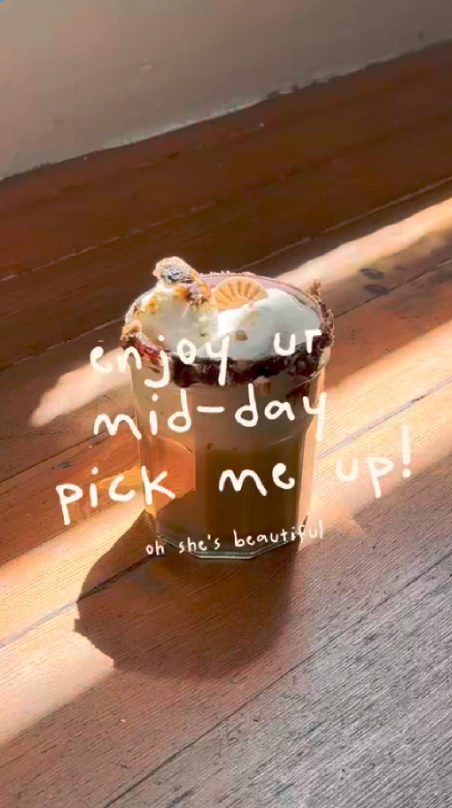
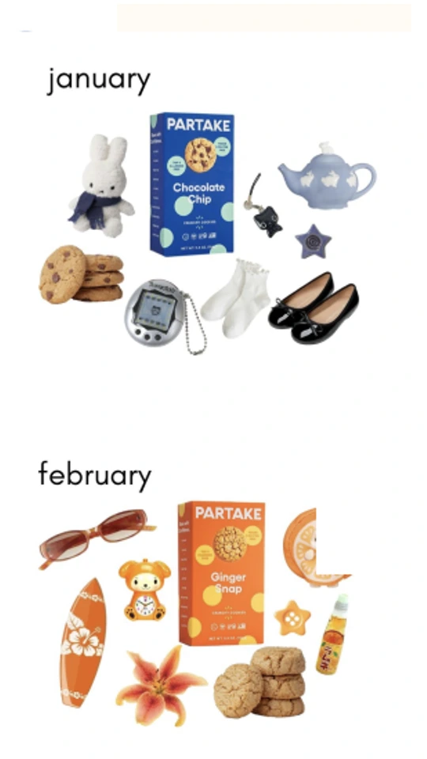
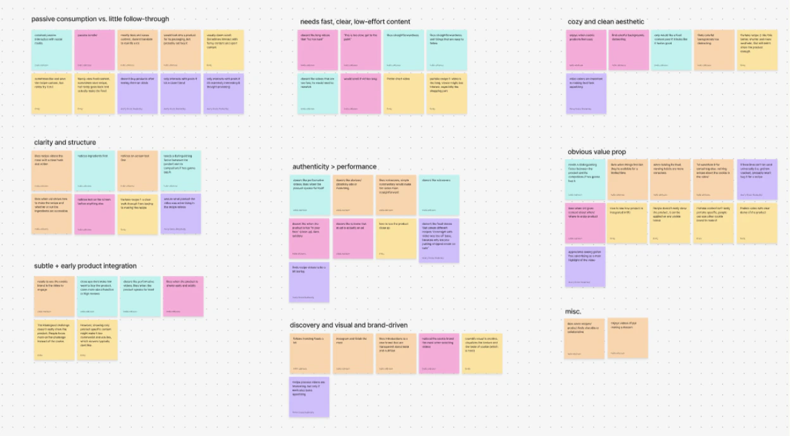
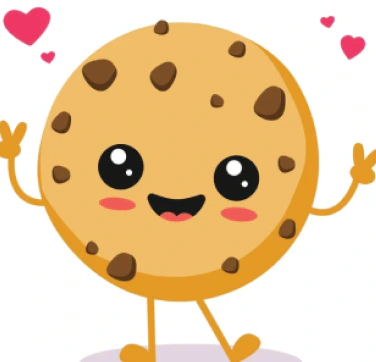

Partake Foods × Berkeley Innovation
A TikTok growth strategy for an allergy-friendly cookie brand.
Partake had a great product and a clear mission, but too few people were finding it. Our first ideas looked like ads, so we built a TikTok strategy around the moments customers already enjoy.
Grow awareness for an allergy-friendly cookie brand competing with Oreo and Crumbl on TikTok, with a lean team and budget.
Led customer research. Our first ideas looked like ads, so we rebuilt the strategy around moments customers already enjoy.
A TikTok strategy framework, a creative concept system and a tested content package. Several concepts later went live on Partake’s Instagram.
The thread: good strategy starts with customer behavior. People save food content as entertainment first, so a brand has to be worth watching before it’s worth buying.
Business challenge
How does a mission-driven brand compete for attention without a big budget?
Partake makes cookies free from the top nine allergens, serving families often left out of traditional snacks. On TikTok, it was up against brands like Oreo and Crumbl, which have larger audiences and more production resources. Partake needed a channel strategy its lean team could sustain.
Reach customers who haven’t discovered Partake yet.
Build an emotional bond around an inclusive table.
Turn attention into purchase intent over time.
Our approach
We applied human-centered design to a business problem.
This wasn’t a traditional design project, and there were no screens to ship. Instead, we used the human-centered design process to keep every strategic decision anchored in customer behavior.
- EmpathizeStudied competitors and listened to customers
- DefineSynthesized insights into customer segments
- IdeateDeveloped repeatable content concepts
- PrototypeProduced a real post for each concept
- TestPublished on TikTok and read the market
Customer research
We started with the customer, not the content calendar.
As research lead, I focused on three questions: what the category was already doing well, what Gen Z customers responded to, and what made them trust a food brand.
- Competitors analyzed
- 6
- Customer surveys
- 55
- Customer interviews
- 5
What customers value in the category
- Guilt-free indulgenceSafe, health-conscious treats
- Visual momentsBreaks, dips, and frosting
- Snack ritualsThe time and place to enjoy it
- Inclusive dessertsAllergy-friendly ingredients
- Creator reviewsRecommendations they believe
Customer insights
Customers weren’t shopping on TikTok. They were looking for a moment.
Synthesis revealed a gap between engagement and purchase. Customers saved and liked food content as entertainment and self-expression, so a brand had to earn attention before it could earn consideration.

Customers were turned off by content that felt overly produced or “try-hard.”
Customers wanted a clear payoff in videos under 15 seconds.
Natural product visibility built trust, while gimmicks reduced it.
Two customer segments

Passive and entertainment-driven. Scrolls for hours, rarely engages, and doesn’t buy what they see.
Win awareness with an instant hook and a memorable brand identity.
Intentional and high-intent. Saves recipes, revisits them, and goes to the store for ingredients.
Win consideration with clear steps and visible allergy-safe proof.
Market strategy
Position Partake inside the moments customers already enjoy.
Our early ideas leaned polished and branded, but customers read that style as advertising. So we changed the strategic question and positioned Partake as an everyday choice rather than a specialty product.
What should Partake post?
How can Partake join experiences its customers already enjoy?
What every concept had to deliver
It fits routines customers already recognize and delivers value right away.
It uses repeatable formats that a lean team can produce.
It builds the awareness and trust that lead to purchase.
Go-to-market concepts
Three concepts, each with a job in the customer journey.
Rather than recommend one-off posts, we built a portfolio of repeatable formats that balance short-term exposure with long-term conversion.
Awareness
Cookie Crumb Latte
Café-style recipes show the product’s versatility and tap into a ritual customers already love.
- Views
- 492
- Likes
- 50
- Comments
- 16
- Completion
- 6.29%
Business takeaway: strong comments on limited reach showed that distribution, not the creative, was the bottleneck.
Consideration
Partake Everywhere
Partake appears at school, at work, and while traveling, reinforcing accessibility and everyday relevance.
- Views
- 586
- Likes
- 53
- Comments
- 5
- Completion
- 16.5%
Business takeaway: music and editing set the post apart, and the shorter format earned the highest completion rate.
Community
Your Month, Your Cookie
A shareable carousel matches flavors to birth months, giving customers a reason to express themselves.
- Views
- 824
- Likes
- 33
- Comments
- 1
- Saves
- 1
Business takeaway: it earned the most views of the three, making carousels worth testing further.
Market results
The market test showed Partake where to invest next.
These early organic posts measured engagement, not sales. Even at a small scale, they pointed to three clear recommendations.
The creative resonated, so the next gain is getting it in front of more customers.
Short, eye-catching openings are what earn a customer’s attention.
Prompts like “comment your month” give customers a reason to participate.
We delivered a TikTok brand strategy framework, a creative concept system, and a tested content package. Several of the concepts later went live on Partake’s Instagram.
Reflection
Good strategy starts with customer behavior.
We began by asking what Partake should say. Human-centered design moved us toward a better question: what do customers already care about? This project showed me that the same process used to design products can sharpen business strategy. Algorithms decide what gets seen, but customer trust decides what gets bought.
What I learned
- Earn attention before consideration. Customers saved food content as entertainment first. A brand has to be worth watching before it’s worth buying.
- Authentic beats polished. The more produced a post felt, the more it read as an ad.
- Read small tests as direction, not proof. Organic posts measured engagement, not sales, so we used them to choose where to invest next.
What I got wrong first
Our early ideas leaned polished and branded. Customers read that style as advertising, which pushed us to stop asking what Partake should post and start asking where it already belonged.